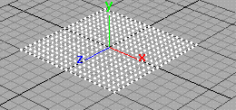
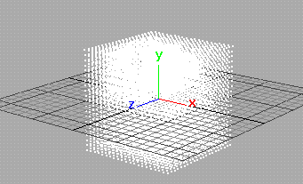

使用 nParticle 工具在场景中的任意位置以及对象表面创建单个 nParticle、nParticle 栅格以及随机 nParticle 簇。
使用“nParticle 工具”(nParticle Tool)创建的 nParticle 在模拟的第一帧中是静态的，但可以通过 Nucleus 重力和与 Nucleus 对象发生的碰撞来为其设置动画。默认情况下，Maya 会在创建 nParticleShade 节点的同时创建一个 Nucleus 节点。您可以改为通过在“ParticleTool”窗口中进行选择，将 nParticle 对象指定给现有 Nucleus 解算器（请参见粒子工具选项）。创建 Nucleus 解算器后，还可以将其指定给 nParticle 对象。请参见“字段/解算器”(Fields/Solvers)菜单。
创建单个 nParticle
- 通过选择，选择要创建的 nParticle 的类型。
请参见 nParticle 菜单。
- 选择
 。
。 - 单击要放置粒子的位置。
- 按
 （Windows 和 Linux）或
（Windows 和 Linux）或  (Mac OS X)。
(Mac OS X)。 这将创建一个新的 nParticle 对象，其包含您定位的 nParticle 和 Nucleus 节点。
提示： 在按（Windows 和 Linux）或 (Mac OS X) 后，才能完成粒子对象。在按 键或 键后，才能用“编辑 > 撤消”(Edit > Undo)来撤消整个对象。 如果要在按
键或 键之前撤消单个 nParticle，请使用  （Windows 和 Linux）或
（Windows 和 Linux）或  (Mac OS X)，以创建顺序的相反顺序移除 nParticle。也可以按
(Mac OS X)，以创建顺序的相反顺序移除 nParticle。也可以按  （Windows 和 Linux）或
（Windows 和 Linux）或  (Mac OS X) 进入编辑模式，然后单击任意 nParticle 并按 或 。按 或 退出编辑模式。
(Mac OS X) 进入编辑模式，然后单击任意 nParticle 并按 或 。按 或 退出编辑模式。 在按
或 之前，还可以更改一个或多个 nParticle 的位置。按 或 Home 键，然后拖动 nParticle。按 或 以完成的 nParticle 对象。
可以将粒子直接放置在多边形 NURBS 对象的曲面上，或构造平面上。
创建 nParticle 云或簇
您可以在场景中创建具有任意数量 nParticle 的云或簇。NParticle 随机放置在云或簇中。
- 选择 nParticle 类型并访问“nParticle 工具”(nParticle Tool)设置窗口（请参见 nParticle 菜单）。
- 在“粒子设置”(Particle Settings)窗口中，设定下列内容：
- 在每个云或簇中所需的“粒子数”(Number of particles)。
该值必须大于 1。
- 每个云或簇所占用的球形区域的“最大半径”(Maximum radius)（使用世界空间单位）。
Maya 将在此区域中随机放置粒子。
- 在每个云或簇中所需的“粒子数”(Number of particles)。
- 根据需要，设置其他“粒子设置”(Particle Settings)。请参见 nParticle 工具选项。
- 单击您希望放置每个粒子云或簇的位置。
- 按 （Windows 和 Linux）或 (Mac OS X)，以创建 nParticle 对象
这将创建一个新的 nParticle 对象，其包含粒子云和 Nucleus 节点。
绘制 nParticle 的连续曲线草图
- 在“粒子设置”(Particle Settings)窗口中，执行下列操作：
- 将“粒子数”(Number of Particles)设定为 1。
- 启用“草图粒子”(Sketch Particles)。
- 设定“草图间隔”(Sketch Interval)值。
这将设定粒子之间的间距。值为 0 时，可以创建几乎由粒子组成的实线。值越大，粒子的间距越大。
- 在工作区拖动鼠标以绘制粒子线。
- 如果需要，松开鼠标按钮，并拖动到另一个位置。
绘制的粒子草图为单粒子对象。
- 按 （Windows 和 Linux）或 (Mac OS X)。
这将创建一个新的 nParticle 对象，其包含绘制的粒子和 Nucleus 节点。
将 nParticle 放置多边形或 NURBS 对象的曲面上
您可以将单个 nParticle、nParticle 簇或 nParticle 流放在多边形或 NURBS 对象的曲面上。
- 选择曲面，然后选择“修改 > 激活 (Modify > Make Live)以使 nParticle 捕捉到对象的曲面上。
- 选择 nParticle 类型并访问“nParticle 工具”(nParticle Tool)设置窗口。
- 设定所需的工具选项以创建单个 nParticle、nParticle 簇或 nParticle 流。
- 单击要在对象的曲面上放置 nParticle 的位置。
- 取消选择粒子对象，然后选择“修改 > 取消激活”(Modify > Make Not Live)。
这样就会取消选择曲面作为激活对象。
注：要使粒子随曲面一起移动，请将曲面设置为这些粒子的父对象。有关详细信息，请参见使对象与动态父对象一起移动。
创建 nParticle 栅格
通过单击工作区创建粒子的 2D 栅格
- 启用“创建粒子栅格”(Create Particle Grid)。
- 设定“粒子间距”(Particle Spacing)值。
这将设定栅格中的粒子间距（按单位）。
- 启用“使用光标放置”(Placement with cursor)。
- 单击以放置栅格左下角点；再次单击以放置栅格右上角点。
- 按 （Windows 和 Linux）或 (Mac OS X) 以创建栅格。 
通过单击工作区创建粒子 3D 栅格
- 启用“创建粒子栅格”(Create Particle Grid)。
- 如果还未选定，选择“使用光标放置”(Placement with cursor)。
- 设定“粒子间距”(Particle Spacing)值。
这将设定栅格中的粒子间距（按单位）。
- 在透视视图中，在左下角点和右上角点单击鼠标左键，指定 3D 栅格底部或顶部的 X 和 Z 轴栅格尺度。不要按 （Windows 和 Linux）或 (Mac OS X)。
- 将光标移动到前视图或侧视图。按 （Windows 和 Linux）或 (Mac OS X) 进入编辑模式。
- 向上或向下拖动左侧或右侧点来创建栅格高度。请勿同时拖动两个点。若要约束放置，拖动时按住 Shift 键。
- 按 或 。 
通过输入值创建 2D 或 3D 栅格
- 启用“创建粒子栅格”(Create Particle Grid)。
- 设定“粒子间距”(Particle Spacing)值。
- 启用“使用文本字段放置”(Placement with text fields)。
- 对于“最小角”(Minimum Corner)，输入左下角点的坐标。对于最大角，输入右上角点的坐标。
- 将指针移到工作区，并按 （Windows 和 Linux）或 (Mac OS X) 创建栅格。